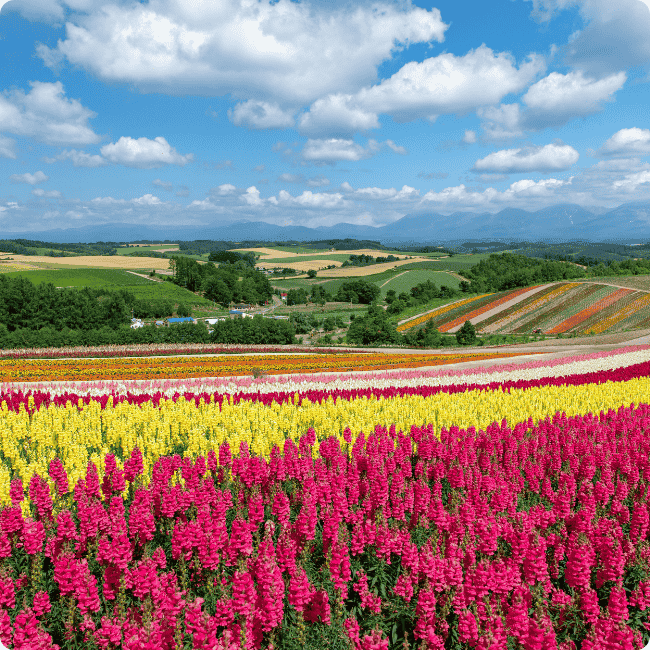
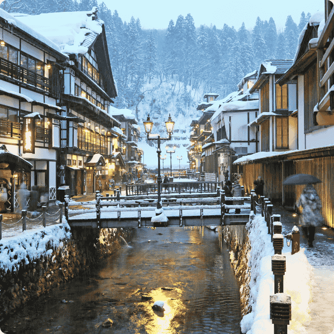

Hokkaido
About Hokkaido
Hokkaido, Japan’s northernmost island, is a dream destination for nature lovers and adventure seekers alike. From the vibrant flower fields of Furano in summer to the world-famous powder snow in Niseko during winter, Hokkaido offers breathtaking scenery year-round. Visitors can soak in relaxing hot springs, savor fresh seafood at bustling markets, and explore serene national parks like Shiretoko, a UNESCO World Heritage Site. With its wide open landscapes, unique wildlife, and rich blend of Ainu and Japanese cultures, Hokkaido promises a peaceful escape from the city and an unforgettable journey into Japan’s wild beauty.
-
Furano Flower Fields
Figure 1: The breathtaking flower fields of Furano -
Niseko Snow Resort
Figure 2: Niseko offers world-class snow and hotspring